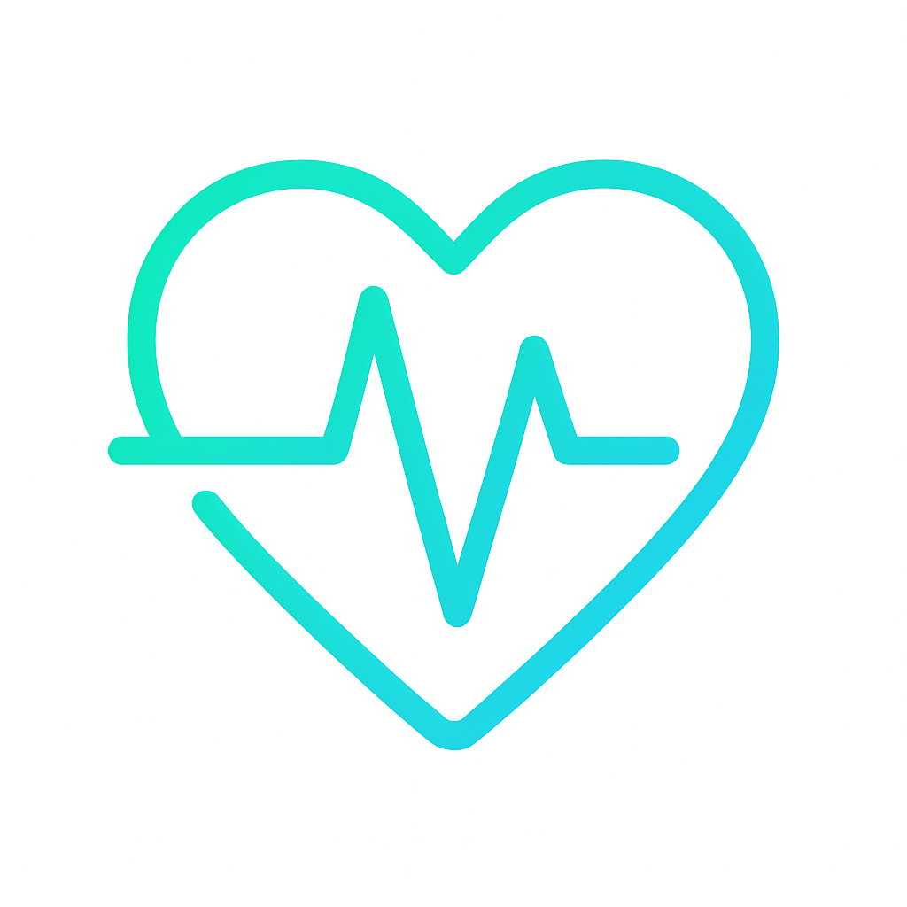

Servicios de Fisioterapia a Domicilio en Sevilla
En FisioCivis ofrecemos servicios especializados de fisioterapia a domicilio en Sevilla, adaptados a tus necesidades. Conoce nuestras áreas de intervención y cómo podemos ayudarte en casa.
Fisioterapia Neurológica
Ictus, esclerosis múltiple, parkinson, lesiones medulares, radiculopatias, neuropatias periféricas…
Leer mas
Fisioterapia Respiratoria
EPOC, fibrosis quística, bronquitis asma, drenaje de secreciones…
Leer mas
Fisioterapia Geriátrica
Prótesis, artritis, artrosis, atrofia muscular, limitaciones de movilidad, patologías cardiacas, secuelas de cáncer, alteraciones de la coordinación y el equilibrio…
Leer mas
Fisioterapia Traumatológica
Patologías musculoesqueleticas, fracturas, esguinces, tendinopatias, cervicalgias, lumbalgia, luxaciones, roturas musculares…
Leer mas

Fisioterapia Vascular
Linfedemas, claudicación intermitente, limpedema, edema postquirúrgico…
Leer mas
¿Aún no sabes sobre las tarifas de estos servicios?
Sesiones realizadas por fisioterapeutas colegiados a precios accesibles en Sevilla.
¿Necesitas más información?
Si tienes alguna pregunta o necesitas más detalles sobre nuestros servicios, ¡no dudes en contactarnos!
Contáctanos